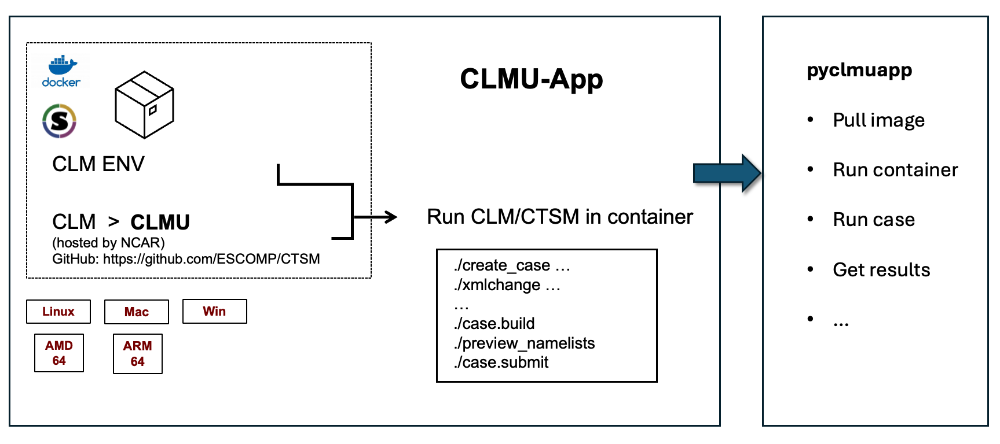

About
pyclmuapp is a Python package for CLMU-App. CLMU-App is a container for urban climate simulations in. It is designed to provide a platform for running Community Land Model-Urban (CLMU) simulations. More details about CLMU-App.
Structure
pyclmuapp <– CLMU-App <– CLMU <– CLM5.0

Note: User should follow the license of CTSM
pyclmuapp relys on CLMU
CLMU is the Community Land Model-Urban, hosted by the National Center for Atmospheric Research (NCAR). CLMU acts as an urban model with a single-layer canopy scheme under the Earth system model hierarchy. See more details in CLM Technical Note.